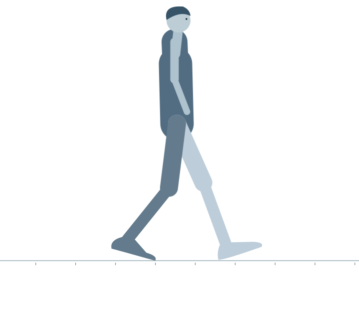
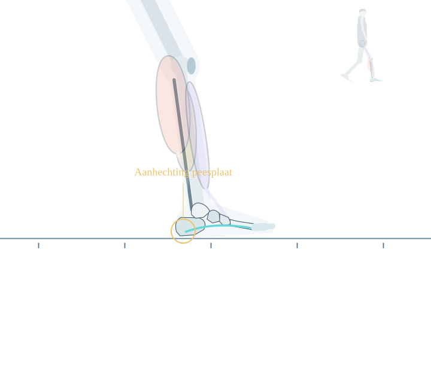
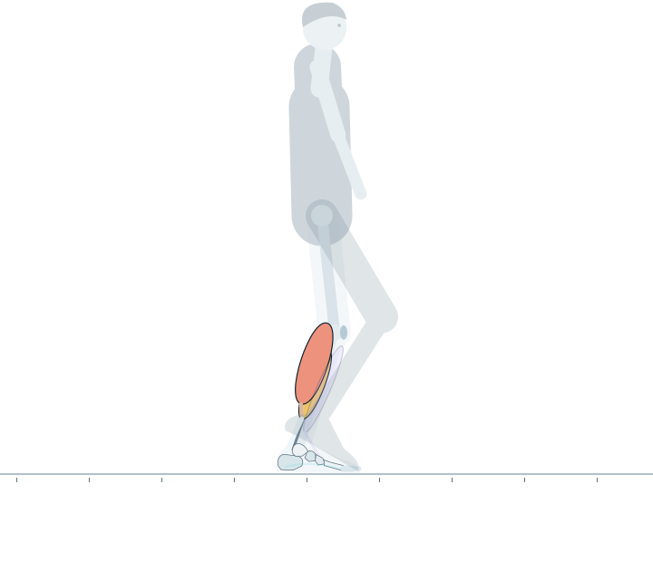
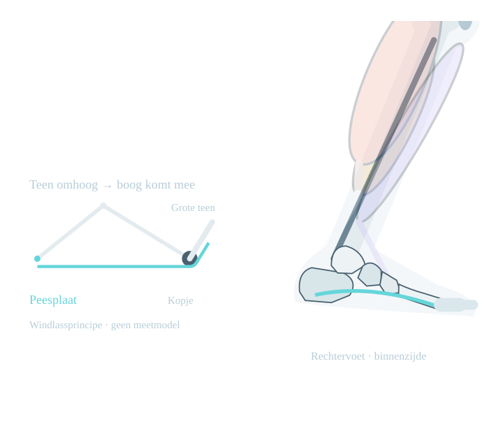
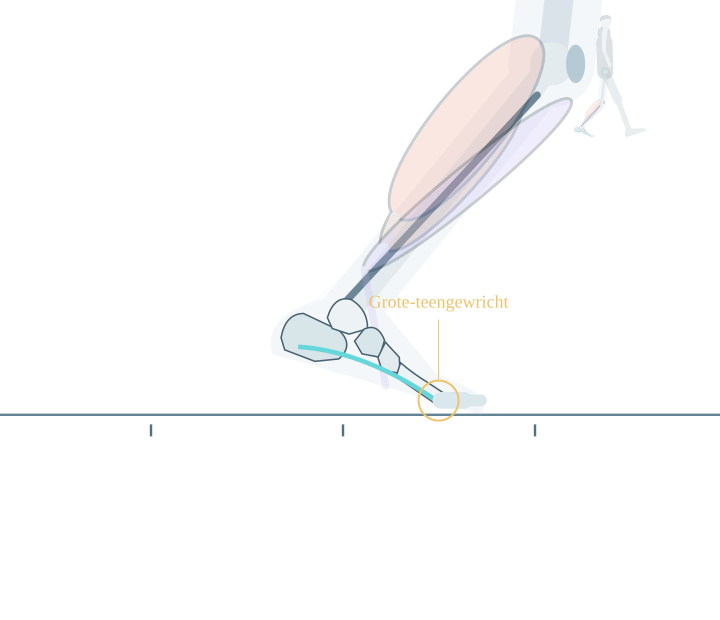
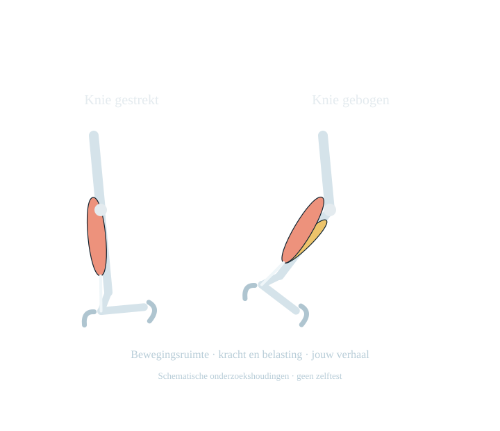
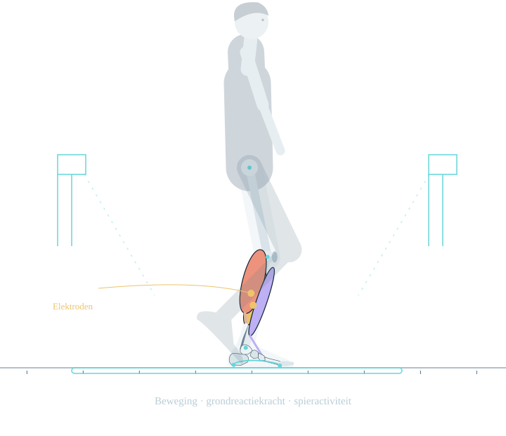
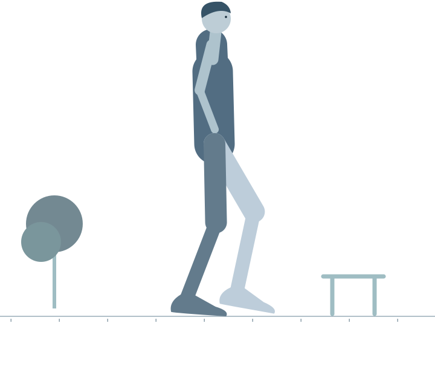

Een pijnlijke stap
Wat vraagt een stap van je voet?
Pijn onder je hiel bij de eerste stappen. Een grote teen die bij het lopen niet prettig meebuigt. Of een enkel die stijf voelt wanneer je lichaam naar voren beweegt. Lopen lijkt één handeling, maar vraagt op verschillende momenten iets anders van je voet en been.
Daarom kijkt een orthopedisch chirurg bij voetklachten naar de pijnlijke plek én naar hoe je beweegt. Waar zit de pijn? Wanneer merk je die? Welke beweging is beperkt? In dit verhaal volgen we een gewone stap en verbinden we die met drie herkenbare voorbeelden: hielpijn, een beperkte enkelbeweging en een stijve grote teen.
De wandelaar laat een voorbeeld van lopen zien. We geven hem geen aandoening en voorspellen niet hoe iemand met pijn zou lopen. We volgen de rechtervoet vanaf het neerkomen tot het volgende contact. Intussen zet ook de andere voet een stap: samen één loopcyclus. 01, 03

De hiel
Pijn onder de hiel
Bij deze wandeling raakt eerst de hiel de grond. Daarna komt de voorvoet geleidelijk naar beneden en neemt het been steun over. De knie buigt mee. Spieren aan de voorkant van het onderbeen helpen de voet gecontroleerd neer te zetten. 01, 06
Onder de voet loopt een stevige weefselband: de plantaire fascie, ook peesplaat genoemd. Die verbindt de hielregio met de voorvoet en tenen en helpt de voetboog ondersteunen. Bij peesplaatklachten kan de onderkant van de hiel pijnlijk zijn, vaak juist bij de eerste stappen na rust. 32
Die klachten worden vaak ‘hielspoor’ genoemd. Maar een botuitsteeksel op de röntgenfoto is niet automatisch de verklaring: veel mensen met zo’n uitsteeksel hebben geen hielpijn. Ook andere aandoeningen kunnen pijn rond de hiel geven. De plek, het klachtenverloop en lichamelijk onderzoek helpen om dat onderscheid te maken. 32
De animatie wijst de peesplaat aan. Ze laat niet zien hoeveel pijn of spanning iemand daar heeft.

Enkel en kuit
Je lichaam moet over je voet kunnen bewegen
Terwijl de voet steunt, beweegt het lichaam verder. Het onderbeen komt naar voren boven de voet. Daarvoor is bewegingsruimte in de enkel nodig. De kuitspieren helpen ondertussen bij steun en voortbeweging. 03, 07, 08, 09
De gastrocnemius begint boven de knie. De soleus ligt dieper en begint onder de knie. Beide brengen via de achillespees kracht over op het hielbeen. Omdat de gastrocnemius zowel knie als enkel overspant, doet de kniepositie ertoe wanneer je de kuit onderzoekt. 04, 20
Een beperkte enkelbeweging kan samengaan met een andere manier van lopen. Mensen passen zich daar niet allemaal hetzelfde aan aan. Bij sommige groepen met voorvoet- of middenvoetklachten is een strakkere gastrocnemius gevonden. Dat maakt de kuit relevant voor onderzoek, maar bewijst niet dat een ‘korte kuit’ bij iedere persoon de pijn veroorzaakt. 20, 21
De vraag is dus hoe de beschikbare beweging past bij wat iemand tijdens lopen nodig heeft, en bij de klachten die daarbij optreden.

Voetboog en grote teen
Van voetboog naar windlass
De voet is geen star blok. Botten, gewrichten, banden en spieren vormen samen een beweeglijke boog. Die verandert tijdens het belasten en loskomen van de voet. Ook de kleine spieren in de voet doen mee. 10, 12, 13
We zetten de wandeling even stil. Uit dezelfde rechtervoet lichten we nu een eenvoudig model: de boog bovenaan, de peesplaat onderaan en de grote teen vooraan. De kleuren blijven gelijk, zodat je kunt volgen welke structuur in het model terugkomt.
Als de grote teen omhoog beweegt ten opzichte van het middenvoetsbeentje, wordt de peesplaat om het middenvoetskopje geleid. Vergelijk het met een band om een katrol. In dit vereenvoudigde model trekt dat hiel en voorvoet dichter naar elkaar en komt de boog omhoog. Dit noemen we het windlassmechanisme. 11
Dit verklaart een mechanische samenhang tussen teen, peesplaat en voetboog. Tijdens echt lopen bepalen ook belasting, rekbaar weefsel en actieve spieren wat er gebeurt. De teen omhoog bewegen zet de voet dus niet automatisch ‘op slot’. Het schema is een uitleg van het principe, geen meting van spanning of een voorspelling van pijn. 10, 11

De grote teen
Als de grote teen niet prettig meebuigt
Wanneer de hiel omhoogkomt, houden voorvoet en tenen nog even contact met de grond. De voet beweegt dan ten opzichte van de tenen. Zo wordt begrijpelijk waarom een pijnlijk of stijf grote-teengewricht juist bij het lopen kan hinderen.
Bij hallux rigidus is er artrose van het gewricht aan de basis van de grote teen. Dat kan pijn en minder beweeglijkheid geven. Iemand kan het pijnlijke bewegen gaan ontzien. Hoe dat eruitziet, verschilt per persoon; de gewone wandeling in deze animatie is geen voorbeeld van een specifiek afwijkend looppatroon. 31
De windlassuitleg helpt om te zien waarom de teen bij de rest van de voet hoort. Ze verklaart niet in haar eentje alle klachten bij hallux rigidus. Het gewricht zelf kan pijnlijk zijn, en ook druk van de schoen op een botuitsteeksel kan een rol spelen. 31
Een scheve grote teen is bovendien niet hetzelfde als een stijve grote teen. Welke structuur klachten geeft en welke beweging lastig is, moet afzonderlijk worden onderzocht.

Het onderzoek
Wat onderzoekt de orthopedisch chirurg?
De drie voorbeelden brengen ons terug naar dezelfde vragen: waar doet het pijn, bij welke beweging en onder welke belasting? De arts onderzoekt de pijnlijke structuur en kijkt naar stand, beweeglijkheid en het functioneren van voet en been. Een bevinding krijgt betekenis in samenhang met je klachten. 23, 31, 32
Bij de kuit kan onderzoek met een gestrekte en een gebogen knie helpen om de bijdrage van de gastrocnemius te beoordelen. Bij het buigen van de knie komen de aanhechtingen van deze spier dichter bij elkaar. De soleus overspant de knie niet. Dat verschil maakt de twee onderzoekshoudingen informatief. 20, 22
De uitvoering doet ertoe: de arts houdt ook rekening met de stand van hiel en voet. Het is geen zelftest waarbij één hoek bepaalt wat er mis is. Ook kracht, belasting en wat je in het dagelijks leven wilt kunnen doen, horen bij de beoordeling. 22, 23
Bij een andere voetvorm of artrose in een ander voetgewricht blijft deze manier van kijken bruikbaar. Welke aanvullende onderzoeken nodig zijn, hangt af van de concrete vraag.

Loopanalyse
Wat voegt kijken naar lopen toe?
Lichamelijk onderzoek laat onder meer zien welke beweging mogelijk is. Kijken naar lopen laat zien hoe iemand die beweging gebruikt. De arts kan bijvoorbeeld observeren wanneer de hiel loskomt en hoe de voet wordt afgewikkeld. Zo kunnen klachten en onderzoek worden verbonden met de activiteit waarbij iemand last heeft. 18, 23
Bij een gerichte vraag kan een uitgebreidere loopanalyse helpen. Camera’s volgen bewegingen, krachtplaten meten de krachten tussen voet en grond en elektroden kunnen elektrische spieractiviteit registreren. Het zijn verschillende metingen; elektrische activiteit is bijvoorbeeld niet hetzelfde als spierkracht. 14, 15, 16
Een afwijkende beweging bewijst op zichzelf niet waar pijn vandaan komt. Ze kan ook een manier zijn om pijn te vermijden. Meetgegevens worden daarom samen met het verhaal en lichamelijk onderzoek beoordeeld. Niet iedereen met voetklachten heeft een gespecialiseerd looplabonderzoek nodig. 17, 18, 23

Het geheel
De pijnlijke plek én de stap eromheen
Bij hielpijn kijken we naar de structuren rond de hiel. Bij een stijve grote teen naar het gewricht en het bewegen over de voorvoet. En bij een beperkte enkelbeweging kan ook de kuit van belang zijn.
Die onderdelen horen bij dezelfde stap, maar hebben niet allemaal dezelfde oorzaak of dezelfde behandeling. De animatie helpt begrijpen welke bewegingen samenkomen. Het onderzoek moet vervolgens duidelijk maken welke bevindingen bij iemands klachten passen.
Dat is het orthopedische oogpunt van dit verhaal: begrijpen wat de voet tijdens lopen moet kunnen, en de pijnlijke plek beoordelen binnen dat geheel.
Verder lezen: Waarom is de kuit belangrijk als de pijn in de voet zit?
Dit verhaal geeft algemene uitleg. Bespreek persoonlijke klachten met je huisarts of behandelaar.
